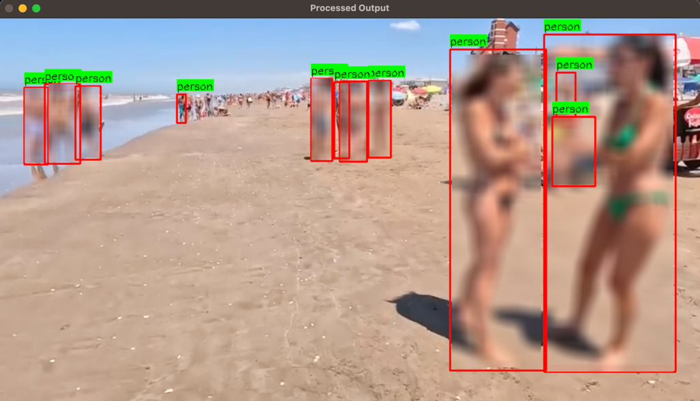
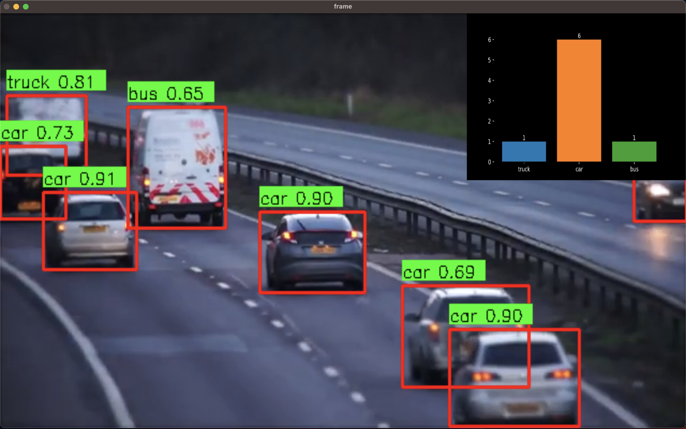
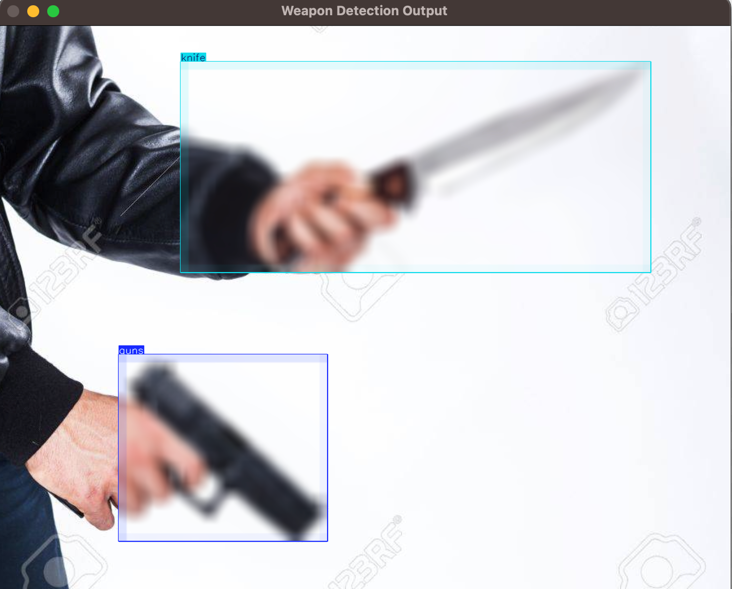
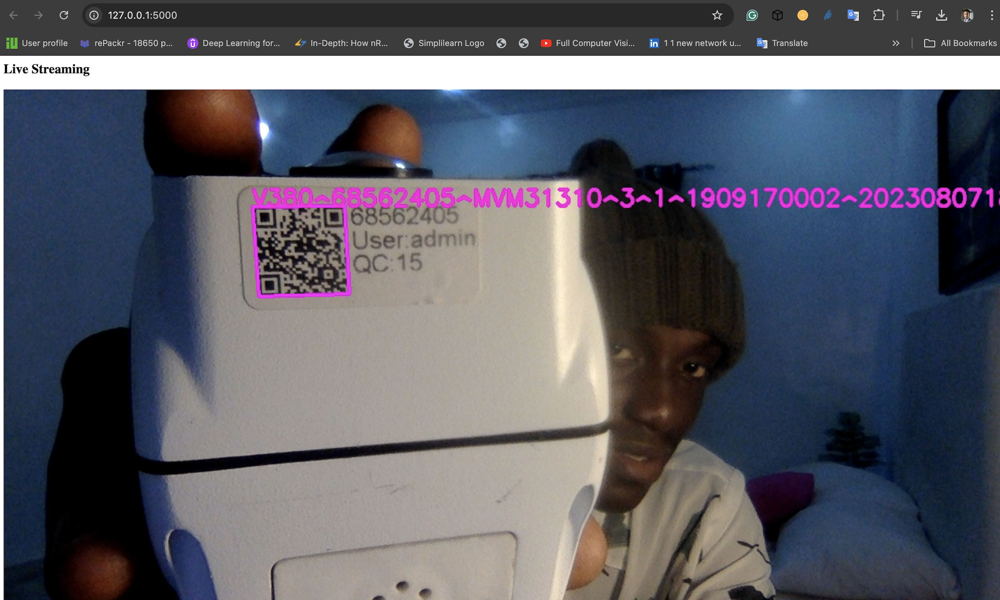

Daniel Etukudo
I am a Machine Learning and Computer Vision Engineer with over 5 years experience in
developing AI solutions for real-time monitoring and recognition systems. Successfully led projects in livestock health monitoring,
face recognition for e-commerce verification, Computer Vision Research for Robotics and more. Adept at deploying machine learning models and collaborating with cross-functional teams
to deliver cutting-edge AI solution. Eager to leverage expertise in AI engineering to drive impactful results in any target role.
Subscribe to my Youtube channel to get notified when I post a tutorial or project.
Feel free to connect with me on Linkedin and Twitter . To know more about me visit the About me page.
This project implements a system for detecting people in video and image frames, checking for inappropriate
dressing (nudity), and applying blurring to detected regions where nudity and Indecent dressing
is identified. It utilizes the YOLOv8 model for person detection and a separate YOLOv8 model for nudity detection. The system is capable of processing video files and image files and outputting processed videos/image with identified nudity regions blurred for privacy.
The system supports both video and image processing. Please don't forget to leave a star ⭐️ on the Github repo.


Real-time vehicle detection, counting, and analysis using YOLOv8. This system processes video input to detect objects, identifies whether detected objects are vehicles,
counts the detected vehicles, and provides a real-time bar plot analysis of the vehicle counts. Please don't forget to leave a star ⭐️ on the Github repo.

A brain tumor detection system that analyzes MRI brain scans
to accurately identify the presence of tumors.
I built the website, designed the API, and
created the AI detection model using TensorFlow, also quantized
the model for deployment on edge devices,
ensuring efficient and real-time performance. Please don't forget to leave a star ⭐️ on the Github repo.

This project demonstrates a method for detecting weapons in images using a YOLOv8 model and
automatically blurring the detected weapon regions. This can be useful in security applications to identify and
obscure weapons in images for privacy and safety purposes. Please don't forget to leave a star ⭐️ on the Github repo.

A clothing type classification model developed with TensorFlow that analyzes images to identify whether the clothing item is sportswear, formal wear, or casual wear. Please don't forget to leave a star ⭐️ on the Github repo.

A real-time barcode detector and text extractor web app that
automatically detects barcodes when the camera is activated,
decodes the text, and displays it in real-time. Please don't forget to leave a star ⭐️ on the Github repo.

A Rock-Paper-Scissors image recognition system using TensorFlow, capable of analyzing hand images to accurately identify gestures as rock, paper, or scissors.
For more of my projects follow me on Github , LinkedIn , Youtube and Twitter. Feel free to reach out to discuss my experience, your projects, or potential collaborations. I'm always open to new opportunities and challenges that push the boundaries of what AI can achieve.
Get in torch with me through my contects or send a direct message with the message box below.